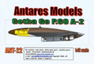

|
Designed by the Arado Flugzeugwerk in 1937 the 196 prototype evolved
into a standardized twin-float two-seat reconnaissance floatplane
used throughout the Kriegsmarine until the surface fleet was lost at
which time it soldered on from land bases and holds the distinction of
being the last combat seaplane produced in Europe. Here is the MPM 1/48
scale version of Arado's AR 196 A
1/2/04
The Arado Ar 232 was the Luftwaffe's only specifically designed combat zone transport. The design was the first truly
modern transport designed and built during World War II. Eight
pre-production machines were known to have been built although 10 were
thought to have been ordered. It is also believed that between twenty
and twenty-two additional machines were built. Gary Buchanan is back to
take us through this Mach 2 offering of this massive transport aircraft,
the Arado AR-232 B.
3/4/07
Here is the fastest operational aircraft of the Second World War. Pilots
reported control flutter and tail instability during high speed runs.
Today we know this is a result of approaching the sound barrier, then
it was an aerodynamic mystery. This is the Arado Ar-234C powered by four
BMW turbojet engines. Only a handful of these were ever made and even
fewer made it into service. Let's take a look at the Pro Modeler 1/48 Arado Ar 234C-3/4 Schnellbomber.
8/5/06
Derived from the Ar E 500 project of 1936 the Arado Ar-340 differed considerably in its configuration
from other entries in the "Bomber B" program. It featured a central
fuselage, twin booms and a trapezoidal wing. The Ar-340 did not have a
tail plane connecting the two tail booms, having tail planes mounted
outboard of the booms only allowing for a greater field of fire. This
ended up being a paper project only but in the modeling world we can
build this aircraft in kit form from Cape Hobbies and Gifts. Here is the
1/72 scale resin multimedia version of the Arado Ar-340.
4/28/07
We are all familiar with the profile of Willie Messerschmitt's
infamous 109 fighter aircraft and most of us have seen or built
at least one, if not more, of the many version of the airplane commonly
available ranging from the early E models used during the Battle of
Britain to the late K or even T models developed at the end of the war.
Here for the first time we can model the progenitor of the series, the A
and the B versions as seen during the Spanish Civil War. From Classic
Airframes here is the 1/48 Bf-109A. 2/14/06
Willie Messerschmitt�s Bf (or Me) 109 series of aircraft are legendary. As development continued the E-4 replaced the E-3
with armament and armor upgrades. On the aft dorsal area of the
fuselage was a transparent cover housing a Peil G IV direction finding
radar unit. These aircraft were used as night bomber interceptors.
Hasegawa has presented us with yet another 109 kit representing this
somewhat unusual variation and you can join me here to examine the
Messerschmitt Bf-109 E4/7 Night Fighter. 5/12/07 Construction completed 8/8/07
In 1941 production of the F model began as a stopgap measure to combat
the Mk III Spitfire as the G models were not ready for production yet.  Many German pilots felt that the F model which was referred to as the
Franz or Friedrich was the best dog fighter of all the variants. ICM has
recently released three nearly identical kits in 1/48 representing
several different 109 F2s and F4s. While ICM kits may not be perfect
they still can be a lot of fun and are easy on the wallet. Let�s take a
look at the ICM Bf-109F Series.
Many German pilots felt that the F model which was referred to as the
Franz or Friedrich was the best dog fighter of all the variants. ICM has
recently released three nearly identical kits in 1/48 representing
several different 109 F2s and F4s. While ICM kits may not be perfect
they still can be a lot of fun and are easy on the wallet. Let�s take a
look at the ICM Bf-109F Series.
3/22/08 Construction of the F-2 completed 01/14/09
The Messerschmitt 109 is one of the most recognizable Axis aircraft from the Second World War. When first developed
in 1935 it was leading edge technology but as the rest of the world
developed new aircraft the RLM kept trying to upgrade the 109. The G
series and the G-10 in specific was an attempt to standardize the type.
Here we can take a look at the large scale kit released by Trumpeter in
2003, a vast improvement over the old Airfix kit. For your viewing
pleasure here is the Messerschmitt Bf-109 G-10. 3/17/07
In 1943 the Messerschmitt Me-262 program was still under development and experiencing some problems. Some German  leaders wanted to get the new jet technology into a viable aircraft as
soon as possible and instructed Messerschmitt to explore converting the
existing Bf-109 to jet propulsion as an interim solution until the 262
could become operational. This is the latest from Antares Models, the
1/48 resin multi-media kit of the Messerschmitt Bf-109 TL. 12/2/07 Construction completed 1/5/08
leaders wanted to get the new jet technology into a viable aircraft as
soon as possible and instructed Messerschmitt to explore converting the
existing Bf-109 to jet propulsion as an interim solution until the 262
could become operational. This is the latest from Antares Models, the
1/48 resin multi-media kit of the Messerschmitt Bf-109 TL. 12/2/07 Construction completed 1/5/08
Designed to a 1934 requirement for a long-range escort fighter was an aircraft of very mixed fortunes. It has  often been criticized for its failure during the Battle of Britain,
while its successes in other fields have been largely ignored. The C
model was the most predominant version during the 'Battle of
Britain' and the D model was developed during the time period of the
invasion of Norway and Denmark. Fitted with a ventral auxiliary fuel
tank it had increased range for escort duty. Let's take a look at
Willy Messerschmitt's Bf 110 C/D Zerstorer Dackelbauch.
often been criticized for its failure during the Battle of Britain,
while its successes in other fields have been largely ignored. The C
model was the most predominant version during the 'Battle of
Britain' and the D model was developed during the time period of the
invasion of Norway and Denmark. Fitted with a ventral auxiliary fuel
tank it had increased range for escort duty. Let's take a look at
Willy Messerschmitt's Bf 110 C/D Zerstorer Dackelbauch.
2/11/05 Construction completed 3/9/05
One of the first projects studied by the Hamburger Flugzeugbau, the Blohm und Voss aircraft section, was for a very
long-range reconnaissance flying boat. With an unusual configuration of
a central boat hull, twin booms and three Junkers Jumo 205D diesel
engines what was officially called the 'Sea Dragon' was better know
by aviators and historians as "The Flying Clog". From Super Model in
Italy this is the 1/72 scale BV 138 Seedrache
1/6/04 Construction completed 12/24/05 Updated 10/23/08 with Bv-138 MS build
Considered by many to be one of the ugliest aircraft of the Second World
War, anyone who owns a Bull Dog will realize that it's beauty is
unique.
One of my favorites is Richard Vogt's asymmetrical design produced by
the ship maker Blohm & Voss, the BV-141 observation and ground
support aircraft. For an in-box preview of this aerial oddity click
here for the Blohm & Voss BV-141B
10/30/03
The BV 142 was basically a land-based version of the BV 139, the long-range float seaplane that first flew in 1936.
Shortly before the outbreak of the war it was modified for use as a
long-range maritime and strategic reconnaissance aircraft operating
outside the range of escort fighters. It is believed that only two were
ever manufactured and their ultimate fate remains unknown. From Mach-2
this is the 1/72 scale kitting of the unique Blohm und Voss Bv-142.
2/11/07
From the creative mind of Dr. Vogt, this is the 1944 Blohm and Voss submission to the Luftwaffe High Command 'Emergency Fighter Program'. This design incorporated many
interesting features including a pressurized cockpit, 40 degree swept
wings, a four hour flight time and the capability to carry a varied
armament load. Although the Focke-Wulf Ta 183 was chosen for production,
the design impressed the panel so much that three prototypes were
ordered. From Fonderie Miniatures, here is the Blohm und Voss BV-212 P-03 tailless high-altitude interceptor. 4/21/04
A Luft-46 project, the Blohm und Voss P.215 designed by Dr. Richard Vogt was, on paper, the definitive
all weather night fighter for the Luftwaffe. Looking over the proposed
electronics packages gives one the impression they are looking at a 21st
century front line machine with IFF systems and bad weather radio
assist landing gear among many other features. Internally contained
radar, massive forward and upward firepower and a four hour loiter time
would have made this beast a formidable opponent. Never making it off
the paper in reality, Fliegerhorst brings it to us in 1/48 scale resin.
This is the fascinating Blohm und Voss Bv-215 12/17/04. Construction completed 1/30/05
The first versions of the Dornier Flying Pencil to see service were the E and F models powered by Daimler Benz 600-G
inverted V-12 engines operating with the Condor Legion in Spain. It was
not long before the shortage of these engines force the line to switch
over to the BMW radial engines and this changed the entire appearance of
the aircraft. Hobbycraft has decided to reissue the entire Do-17 family
in 2006 so let's take a look at what is involved with this particular
model, the 1/48 scale Dornier Do-17E/F.
3/5/06
Dornier constructed a number of aircraft that were later to be dubbed the "Flying Pencils" due mainly to the
long thin outline of the fuselage. The Do-17 made its mark in the
attack on Poland in September 1939 and its versatility was such that the
Luftwaffe used it as a bomber, reconnaissance plane and as a
pathfinder. Its limitations were shown in the 'Battle of Britain'
where it was outclassed typically eight guns to one. Hobby Craft makes a
poor kit of the 17 but for 1/48 scale it's the only game in town. Let
us take a look at the Dornier Do-17M/P.
3/5/05
Hobbycraft has produced several kits of the Dornier Do-17 to represent nearly every major  subtype of the aircraft but all suffer from the same ailment, a serious
banana bow to the fuselage. Gary Buchanan joins us today with an in
depth look at how to fix that bow once and for all. In the past fixes
have been attempted by Squadron and their replacement canopy does
address the nose issues but here you have the ultimate fix for the Do-17 Banana Bow.
11/4/06
subtype of the aircraft but all suffer from the same ailment, a serious
banana bow to the fuselage. Gary Buchanan joins us today with an in
depth look at how to fix that bow once and for all. In the past fixes
have been attempted by Squadron and their replacement canopy does
address the nose issues but here you have the ultimate fix for the Do-17 Banana Bow.
11/4/06
The Dornier Do17Z was to be the definitive development of the Do 17 series. The 17 series had always  had rather cramped crew quarters and on the Z version the roof was
raised and fully glazed. The aircraft was said to be popular with both
flying and ground crews and was the most reliable of all the Luftwaffe
bombers but it lacked the bomb load of the He 111. For ages the only
choice in 1/48 for this type was the Hobby Craft "Banana" but now
Classic Airframes has come to the rescue with this all new tooled Dornier Do-17Z.
6/10/07
had rather cramped crew quarters and on the Z version the roof was
raised and fully glazed. The aircraft was said to be popular with both
flying and ground crews and was the most reliable of all the Luftwaffe
bombers but it lacked the bomb load of the He 111. For ages the only
choice in 1/48 for this type was the Hobby Craft "Banana" but now
Classic Airframes has come to the rescue with this all new tooled Dornier Do-17Z.
6/10/07
The origins of this twin-engine flying boat go back to 1934 when Deutsche Lufthansa asked Dornier
to develop a more modern successor to the Wal. It was designed for
Trans-oceanic mail service and is notable for being the first commercial
flying boat fitted with diesel engines. The Do-18, which was smaller,
less powerful, less well armed than Allied counterparts and generally
considered harmless by Allied flyers was nonetheless useful to the
Germans. From Matchbox, here is the 1/72 scale Dornier Do-18 G-1/D-2.
4/30/05 Construction completed 6/21/05
The Wal had established Dornier as a financial success in the aviation industry and the Do-18 had
confirmed the developmental ability of the basic design. The
development of that design into the Do-24 for the Dutch Navy and for the
Reichs Luftfahrt Ministerium lead to an aircraft that would be the most
successful large seaplane of the Second World War and see service in a
variety of forms right into the Twenty-First century. First designed in
1936 and last built in the 1980s this is Claudius Dornier's Do-24 T long-range reconnaissance seaplane.
6/24/05
The savior of many a downed Luftwaffe pilot and used by several air forces within the European community
this Seaplane by Dornier was a resounding success. While this aircraft
has long been available in 1/72 scale at long last a model manufacture
has dared to produce it in 1/48 scale. New in 2006 from Fonderie
Miniatures this is the very large 1/48 scale multimedia kit of the Dornier Do-24T.
8/12/06 Construction Completed 12/24/06
The Dornier Do 215 was essentially a 17Z powered by Daimler-Benz DB 601a liquid cooled engines.
Sweden placed orders for 18 aircraft designated as a B variant. Before
these could be delivered, an embargo was placed on exporting bombers and
the order went instead to the Luftwaffe for reconnaissance duties as
the B-4. Gary Buchanan is here to take a look at the ICM kit of this
somewhat obscure version of the flying pencil. An interesting kit
especially for Dornier fans, here is the ICM Dornier Do-215B-4.
8/12/07
Hey, will ya look at this! It�s another Dornier kit review! This is a pretty amazing aircraft used by the Luftwaffe
in many different roles. Today let's look at the Do-217 E-5, which
was modified from late production Do-217 E-4s to carry the Henschel Hs
293A standoff missile. This was one of the earliest examples of a
"smart" or guided weapon. Designed by Bill Koster and produced by
Monogram under the Revell and the Pro Modeler name tag, here is Claudius
Dornier's Do-217 E-5 anti-shipping patrol aircraft.
9/10/04
Claudius Dornier began to design and produce aircraft very early in the twentieth century and became instrumental in
restoring Germany�s position in the international aircraft
manufacturing community. He designed the Do-17 in 1935, which lead to
the development of the 217, which saw many different variations.
Presented for your consideration and entertainment, here is the old MPM
1/48 Vacuform Dornier Do-217 J1/N1
11/7/03
One thing is for certain; the Germans knew how to squeeze every possible ounce of usefulness out of a design.  The Do-217 series of aircraft saw service in a wide variety of roles
from conventional bomber to long range reconnaissance, shipping
interdiction and night fighter. The N variation was the last production
version of the 217 filling the role of night fighter and night bomber.
Here I will take a look at a conversion kit from Koster Aero Enterprises
for use with the Revell Do-217 E-5 and I'll also take a look inside a
few other detail packages that will help take this conversion right
over the edge. Come with me and see just how far you can go with the
Dornier Do-217 J-2/N-1. 7/9/05
The Do-217 series of aircraft saw service in a wide variety of roles
from conventional bomber to long range reconnaissance, shipping
interdiction and night fighter. The N variation was the last production
version of the 217 filling the role of night fighter and night bomber.
Here I will take a look at a conversion kit from Koster Aero Enterprises
for use with the Revell Do-217 E-5 and I'll also take a look inside a
few other detail packages that will help take this conversion right
over the edge. Come with me and see just how far you can go with the
Dornier Do-217 J-2/N-1. 7/9/05
The Dornier Do-217 was a direct development of the Do-17, which first flew in 1934. The Do-217, a  versatile aircraft, appeared with a variety of power plants during its
career between 1940 and 1944. The Reichs Luftfahrt Ministerium mindset
was to take a good idea and develop it to its ultimate capability and
the 217 is a fine example of that process. The K and M
models received the distinguishing bulbous glazed nose and upgraded
electronics packages specifically designed to deliver early cruise
missiles or glide bombs. Designed to modify the Pro Modeler Do-217E this
is the Koster Do-217 K-2/M-11 conversion kit. 7/25/04
versatile aircraft, appeared with a variety of power plants during its
career between 1940 and 1944. The Reichs Luftfahrt Ministerium mindset
was to take a good idea and develop it to its ultimate capability and
the 217 is a fine example of that process. The K and M
models received the distinguishing bulbous glazed nose and upgraded
electronics packages specifically designed to deliver early cruise
missiles or glide bombs. Designed to modify the Pro Modeler Do-217E this
is the Koster Do-217 K-2/M-11 conversion kit. 7/25/04
Over the last year I have spent a lot of time reviewing the various kits and conversions available for
Claudius Dornier's 217 bomber. Here I am putting a couple of these
together into a massive construction/conversion project. Starting with
the Pro Modeler Do-217 E-5 and utilizing the Koster Aero Enterprise
K-2/M-11 conversion kit I slice and dice my way to the rare and sparsely
documented Dornier Do217 M-11 bomber designed to handle the innovative
Fritz-X guided missile. Come share this journey with me, see what is
involved in creating a Dornier Do-217 M-11
12/10/04
The unique configuration of this aircraft conferred on it a phenomenal performance, which
completely eclipsed all of its contemporaries. The Do-335 was one of a
small group of aircraft marking the pinnacle of international
piston-engined development. The design incorporated several unusual
features including a reversible tractor airscrew, a wing leading edge
de-icing system, hydraulically operated flaps, and a compressed air
ejection seat. This is the Tamiya Heavily Armed Dornier Do-335 B-2.
Updated 5/21/04
This aircraft has the fine distinction of being the first helicopter to achieve production status. Originally intended as a six
passenger transport aircraft in 1939 she first flew in 1940 and with
the opening of the Second World War was quickly adapted to military use.
Intended for rescue operations and reconnaissance roles the results of
Allied bombing prevented any more than ten or eleven every making it off
the assembly line. Built by Focke Achgelis, this is the Fa 223E-0 Drache.
3/18/06 Construction Completed 9/15/08
Here is another adventure into the strange and unusual. From Planet Models this is a Luft'46 project initiated by Folke
Wulf in 1943. If the war had not concluded when it did our aircrews
would have been facing a mind-boggling collection of technologically
advanced aircraft. Taken down from the shelf and dusted off for your
enjoyment, here is the Folke Wulf Project VII Flitzer
11/19/03
In 1935 the Focke Wulf Fw-58 Weihe took to the air for the first time.
Designed as a small transport and passenger plane in truth it
was a flying truck. The Luftwaffe saw this potential and adopted it as a
light utility plane. Produced in several variations including a bomber
trainer and a seaplane nearly 4500 were delivered before the Siebel 204
was introduced as its replacement. A rare model in any scale here we
look at the 1/48 MPM multi-media vacuform Fw-58B Weihe.
9/30/05 Construction completed 3/4/06
Here is a major "Super Detail" effort. This is MPM's 1/48 scale Fw-189A,
which was referred to as "The Flying Eye" by the Allies. This kit includes resin parts, PE details and scratch built material.
For a complete construction review of the model click here...Fw-189A
6/5/02
Revised 1/19/04 with additional pictures
The Focke-Wulf Fw 191 was one of the two primary finalists in the "Bomber B" program. The most unusual feature
of the 191 was the use of electric motors for every device that would
have normally been actuated mechanically or hydraulically. This aircraft
was actually built and test flown in 1942. Gary Buchanan is here today
to walk us through this full resin kit from Planet Models of the Focke-Wulf Fw-191.
10/20/07
I was so impressed with the Koster vacuform pieces that I immediately purchased a 1/48 Fw-200 Condor kit from Great Models Web Store. This is another Bill Koster production. I've found this to be a very nice kit.
For a complete review of the kit in the box go here...Box Review
For a complete construction review of the model click here...Fw-200 Construction Review Page One or
Take a shortcut to Page Two
9/2/03
The Focke-Wulf P.11 aircraft was a paper project jet powered aircraft. Designed by Kurt Tank the P.11 would most  likely have been powered by a single Jumo 004 engine and carried an
armament package consisting, most likely, of 2 nose mounted Mk 103 or Mk
108 cannons and two MG 151/120 wing root mounted guns. Here we can take
a look at the new Planet Models 1/48 resin kit of Kurt Tank’s Focke Wulf P.11.
likely have been powered by a single Jumo 004 engine and carried an
armament package consisting, most likely, of 2 nose mounted Mk 103 or Mk
108 cannons and two MG 151/120 wing root mounted guns. Here we can take
a look at the new Planet Models 1/48 resin kit of Kurt Tank’s Focke Wulf P.11.
9/27/09 Construction completed 9/27/09
The Horten Brothers claimed a spot in aviation history with the development of their flying wing interceptor the Ho.229. 
When this aircraft was being considered for full scale production by
Gotha, designers proposed an alternative all-wing design that would
allow for the external mounting of engines and the addition of extra
crew and/or equipment. This design was the Go P.60 and had a couple
variations. Two configurations were proposed with one engine mounted on
top and one underneath the wing body and the other with both engines
mounted ventrally. In reality only a paper project here we look at the
Antares offering in 1/48 resin of the Gotha Go P.60 A-2. 3/25/07 Construction Completed 1/20/09
When Ernest Heinkel was developing this aircraft its true military
nature was concealed by classifying it as a civilian aircraft.
It was considered pleasant to fly but was seriously under powered. Some
were used as trainers, some were used as torpedo bombers and most
importantly, some were used as SAR aircraft. During the first months of
World War II they were used to lay mines and during the Battle of
Britain they were used to recover Luftwaffe pilots downed in the
channel. Here is Aviation USK's 1/72 Heinkel He-59B/D.
8/20/07 Construction completed 4/15/08
Here is an aircraft that soldiered through World War Two from beginning
to end virtually unchanged. Active during the Spanish Civil War
and during the invasion of Poland, prominent during the Battle of
Britain and the 'Night Blitz', this is Monogram's 1994 release of the
1/48 scale Heinkel He-111. For a review of this kit, click here - Heinkel He-111 H-4/5
10/9/03
Click here for a complete construction review of this kit converted to a "B" version Pedro. Project completed 1/19/04
Ernst Heinkel built his first torpedo carrying seaplane in 1926. It never amounted to much as such but provided the
practical experience in launching torpedoes that lead to the
development of the He-115 in 1938. The 115 was a large aircraft with
weak defensive armament. On the plus side it showed itself to be a
fairly sturdy aircraft that behaved well on water and in the air.
Besides its intended use as a torpedo bomber it also performed as a
smoke screener, mine layer and for long range reconnaissance missions.
From Revell of Germany Japanese subsidiary Tsukuda, here is the 1/72 Heinkel He-115C-1 torpedo/reconnaissance seaplane. 7/2/05 Construction Completed 7/31/06
Born from desperation during the final months of World War 2 the Heinkel He-162 Salamander saw extremely
limited service. The type never even went through prototype flight
testing before production was established yet it still managed to draw
blood and present itself as a unique aircraft type. Here we take a look
at two He-162 kits; one from Dragon as the proposed Mistel and the other
from Tamiya as the A-2 fighter superiority type, Heinkel He-162 Mistel and Salamander.
7/2/06
The He-177 "Greif" was Germany's only foray into the realm of the large
bomber. The program was plagued by difficulties throughout its career.
The He-177 had a nasty tendency to burst into flame during normal
cruising flight. Mike Glinski is back and has converted this exotic
bomber into an interesting tank killer. Join us in checking out this
unusual variation of the He-177 A3 converted to an R5 tank killer.
11/18/05 Updated 8/12/06
In 1938 the Luftwaffe issued a requirement for a heavy
bomber/Anti-Shipping aircraft with one rather bizarre requirement; it
had to
perform as a dive bomber also. Ernest Heinkel gave it his best effort
and ultimately produced this huge four engine twin propeller bomber that
entered service in 1944. He named it "Greif" which means Griffin but
the air crews called it Luftwaffenfeuerzeug which means Luftwaffe
lighter in reference to the engines propensity to catch fire. Let's take
a look at the new 1/48 scale injection molded Heinkel He.177A-5 "Greif". 5/20/06
Potentially one of the most effective night-fighters for the Luftwaffe, the Heinkel He-219 "Uhu' (eagle owl)
was doomed by political misjudgments and maltreatment. Probably the
superior platform among the Luftwaffe's reciprocating engined
night-fighters, better than any of the German aircraft adapted to the
role, it gained noteworthy results against allied air forces. In the end
very few actually saw service. From Tamiya, here is the 1/48 scale Heinkel He-219 Uhu
3/20/04
Leading the way into the jet age this is an aircraft that captured many
'firsts', here is the Heinkel He-280. Not only the first
jet aircraft to get beyond the prototype stage but advanced enough,
fast enough and agile enough to best the dreaded Fw-190 'Butcher Bird'
in a mock dogfight. If the RLM had approved this aircraft for production
things could have been very different, very different indeed. For your
enjoyment here is a look at Eduard's 1/48 Heinkel He-280 ProfiPack.
1/26/04
As the Nazi homeland began to feel the effects of continuous Allied bombing they began to look for ways to provide
point defense coverage for factories and key facilities. Airfields were
not always close by or able to be maintained consistently so VTOL craft
were explored as possibilities. Heinkel proposed this concept aircraft
powered by a turboprop variation of the Henschel He S 011 turbo jet
engine. It never made it off the drawing board and was replaced by an
equally bizarre concept that went no further either. From ARBA in resin
this is the 1/48 scale Heinkel "Wespe".
4/14/06
Let's delve into the strange and unusual one more time, or at least it seemed so in 1944. Today the concept of a flying
wing is not so unusual but when three brothers in Germany were first
developing this idea in 1931 it was most definitely 'strange and
unusual'. Here is a look at Walter, Reimar and Wolfram Horten's flying
wing night fighter and some of the accessories available for it. From
Dragon Master Series, here is the Ho-229B Nachtjager.
2/12/04
The concept of dive-bombing was pursued by German planners from soon after the end of World War One
Henschel designed the Hs-123 as a stopgap measure until a more advanced
dive-bomber type should emerge, what ultimately became the Junkers
Ju-87. Mid-1944 saw the Hs-123 finally grounded not by enemy action or
the weather but simply by attrition and lack of spare parts. Originally
from ESCI then ERTL and Italeri then acquired by AM Tech, improved and
re-issued in 2003 here is the 1/48 scale Henschel Hs-123A-1.
3/25/05
The Hs 129, often referred to by its nickname, the Panzerknacker was developed to a 1937
requirement for a twin-engine ground attack aircraft mounting at least
two 20mm cannons and with heavy armor for the pilot and engines. In an
effort to be more effective against newer Russian tanks the armament was
upgraded in 1944 with a 75mm gun from the Panzer IV. Unfortunately the
combination of inadequate power plants and excess weight resulted in an
aircraft that flew like a pig. This variant was known as the Hs-129B-3 "Panzerknacker". Updated with comparisons to all three Hasegawa Hs-129 kits. 1/28/05 Construction complete 9/21/08
Besides the Bf/Me-109 the Stuka has got to be one of the most recognizable German aircraft of World War 2.
It even had a phobia named after it - Stuka Fright. You don't get that
with a Spitfire or a Liberator. Its place as a dive-bomber was secured
in the skies over France in 1940 but it also acquired a reputation as a
tank killer on the Eastern Front in the hands of pilots like Hans Rudel.
Here is Hasegawa's 1/48 scale JU-87 G-2 Stuka Anti Tank Attacker and a look at some of the detail packages available to help dress it up.
2/27/04
The Junkers Ju-88 looks clumsy and all out of proportion but it demonstrated during the Second World War
that it was perhaps one of the most versatile aircraft of the period.
Able to take a substantial amount of damage and still fly home yet
despite its complexity the plane was greatly prized by those who flew it
and was one of the most widely used planes in the Luftwaffe. Here is
the Pro Modeler 1/48 scale Junkers Ju-88 A-4 "Schnellbomber."
8/8/04
The Junkers Ju-88 was perhaps one of the most versatile aircraft of the Second World War. The Ju-88 was well  built and could take a substantial amount of damage and still fly home.
Despite its complexity the plane was greatly prized by those who flew
it and was one of the most widely used planes in the Luftwaffe. The A-6
was based on the popular A-4 variant and was designed to clear enemy
airspace of barrage balloons. This caused serious flight degradation and
was ultimately a failure however Dragon has given the modeler an
opportunity to display this version in his collection. Here is the 1/48
Dragon Junkers Ju-88 A-6. 9/22/07 Construction completed 11/3/07
built and could take a substantial amount of damage and still fly home.
Despite its complexity the plane was greatly prized by those who flew
it and was one of the most widely used planes in the Luftwaffe. The A-6
was based on the popular A-4 variant and was designed to clear enemy
airspace of barrage balloons. This caused serious flight degradation and
was ultimately a failure however Dragon has given the modeler an
opportunity to display this version in his collection. Here is the 1/48
Dragon Junkers Ju-88 A-6. 9/22/07 Construction completed 11/3/07
The Ju-290 was the only four-engined heavy-duty aircraft used by the Luftwaffe in World War II
and was the forerunner of the subsequent transatlantic civil aircraft.
The Ju-290 carried search radar, had a range of over 3,000 km and could
remain airborne for over 20 hours. For its patrol role it was well
equipped and was soon replacing Folke Wulf 200 Condors. Here I take a
look at the definitive A-5 version in 1/72 scale from Revell of Germany,
the Junkers Ju-290 A-5 Seeadler
4/10/04
During the Second World War Germany had virtually no large, four-engined planes. The only exceptions were the
Focke-Wulf Fw200 Condor the He 177. The Ju 290Z was a proposal to
further increase the range and lifting capabilities of the basic Ju 290
(a replacement for the Fw-200) by joining two airframes with a common
center wing. Guest author Mike Glinski shares his experience with us in
creating this beast. Be amazed for this is the Junkers Ju-290Z Zwilling long range anti-shipping aircraft.
6/17/05
Various problems with the development of the Ju-177 bomber combined with the long developmental period
prompted the Junkers design bureau to suggest a new four engine bomber
program. A prototype was developed but French saboteurs put an end to
that. Antares Models has resurrected this prototype bomber in kit form
and Gary Buchanan is here to show us the ins and outs of the kit. Join
us in looking at the resin and metal 1/72 scale Junkers Ju-488 heavy bomber.
12/24/06
Here is my 1/48 scale Hasegawa Me-109 F-2 creation. This is another "super detail" project that includes aftermarket resin pieces for the engine, cockpit and landing gear along with aftermarket decals.
For a complete construction review of this model click here...ME 109 F-2
Revised 9/16/03
You are being launched down a short runway achieving 200 mph within
seconds then dumping the wheels and pointing the nose 80 degrees
towards the sky. Eight minutes later you are at 500 mph, 30,000 feet
and your engine quits - no more fuel! Now you are a very fast glider and
there is the enemy, you only get one shot then have to find your
airfield. No power for a second attempt or evasive action and the enemy
are prowling around down there just waiting for you at your most
vulnerable point. This was the life of a Rocket Fighter pilot. Here we
take a look at the old 1/48 Trimaster kit reissued by Dragon of the Messerschmitt Me-163B-1a. 1/21/07
No, I'm not really a jet person but I do have a soft spot for the ME-262. Tamiya has seen fit to release a clear version of
this historic aircraft and I found it to be irresistible. After all,
it's clear! You can see all the cool stuff inside. Come on! How can you
not have one of these in your collection? So, without further ado, here
it is, Tamiya's 1/48 scale ME-262, Clear Edition
10/31/03
You know what really gets someone's attention? A really big gun. In an effort to break up Allied bomber formations the
Luftwaffe experimented with a massive 50mm Mauser cannon in place of
the standard two and four cannon noses found on most Me262s. Way back in
'94 or '95 I built the Dragon release of one of these airframes and
present it here with some general ramblings about the kit and the
aircraft. Here it is, Dragon's 1/48 scale Me262A-1/U-4
11/18/03
Designed as a bomber interceptor, the original 262A concept was exceptional in its function. Hitler's
demands for a jet bomber really handicapped the aircraft. The design of
the 262 allowed for the nose section to be removed and various armament
configurations to be plugged in. Two airframes had the steel nose
replaced with a plywood and persiplex nose section providing for a prone
position bombardier and a gyro-stabilized bombsight in an attempt to
improve the bombing characteristic of the aircraft. Originally kitted by
Tri Master, here is DML's 1/48 Me-262A-2a Jet Bomber.
1/14/05
Due to the handling characteristics of jet powered aircraft being slightly different from those of piston engined aircraft the
Luftwaffe saw a pressing need for a trainer aircraft to transition
their pilots over to the high performance Me262. Only a handful of these
trainers had been completed before an even more urgent need had to be
fulfilled, that of the Night Fighter. Here is an in-box preview of
Dragon's 1/48 Me262B-1a/U4 radar equipped Night Fighter.
12/6/03
When the Messerschmitt Me-262A first blew through Allied bomber formations aircrews were amazed and astonished at the
performance levels they witnessed however the creator of this
technology only saw it as an interim type of aircraft platform
considered dead by 1945. Here is a resin conversion package from Antares
Models designed to create a prototype high speed development of the
Me-262 utilizing a donor 1/48 scale Me-262 kit. While the 262A was an
incredible development this trans-sonic version would have been a real
eye opener, here is the Me-262 HG.III Day Fighter project. 12/20/08 Construction Completed 2/24/09
The Me-262 is definitely one of the more popular kits in the modeling world and as such
the aftermarket industry has done an exceptional job of producing
detail and conversion sets for the various production kits on store
shelves. Here we shall examine an amazingly well detailed package from
Aires that provides for two complete Junkers Jumo 004 turbojet engines.
Nearly the most expensive 262 detail package you can pick up and aimed
at the Tamiya series of kits it still can be used with virtually any
1/48 Me-262. Take a look at the Aires 262 Engine Set.
9/2/05
Combat experience with Willie Messerschmitt's Me-109 indicated that greater speed, longer range and heavier  armament would be needed for future operations and in late 1940 the
Messerschmitt company began working on a potential replacement, the
Me-309. Unfortunately the 309 offered little improvement in performance
over the Me-109G, which could also out turn the Me-309. At this time the
introduction of new, better fighters like the Fw-190D was near and
little use was seen for the Me-309. This is the Czech Model 1/48 Messerschmitt Me-309
armament would be needed for future operations and in late 1940 the
Messerschmitt company began working on a potential replacement, the
Me-309. Unfortunately the 309 offered little improvement in performance
over the Me-109G, which could also out turn the Me-309. At this time the
introduction of new, better fighters like the Fw-190D was near and
little use was seen for the Me-309. This is the Czech Model 1/48 Messerschmitt Me-309
10/29/04, construction completed 11/10/04
The D.III was a fair airplane with a few faults. It used an inverted
airfoil on the elevator which enhanced its ability to recover
from a dive, a twin spar lower wing design was used which overcame the
issues pilots were experiencing with the Albatross. On the down side the
formed fuselage was prone to warpage as the airframe aged due to poor
glue or possibly moisture absorption. Other issues the type experienced
were low power and climb performance. Eduard from the Czech Republic has
packed a couple of these aircraft in a single box for us, let's check
out their 1/48 Pfalz D.III Combo Kit. 11/25/07 Construction completed 12/27/07
Requested for development in 1938 by the RLM to replace the aging Fw-58 the Siebel 204 became one  of the most advanced utility aircraft of the day. Powered by two Argus
411 V-12 engines this type was used as a trainer, aerial taxi and aerial
ambulance until the end of the war. It continued in service with many
European countries after the war and finally ended service in 1960.
Check out this old 1/48 scale MPM Vacuform kit of the Siebel 204 D utility aircraft. 9/23/06
of the most advanced utility aircraft of the day. Powered by two Argus
411 V-12 engines this type was used as a trainer, aerial taxi and aerial
ambulance until the end of the war. It continued in service with many
European countries after the war and finally ended service in 1960.
Check out this old 1/48 scale MPM Vacuform kit of the Siebel 204 D utility aircraft. 9/23/06
The Ta-183 resulted from the Emergency Fighter Program of the Reichsluftfahrtministerium
intended to fast track jet fighter development. This was in response to
their fears that they would soon be facing Allied Gloster Meteors and
wanted to have the next generation of fighter aircraft ready to replace
the Me-262. It is speculated that this aircraft design was developed
into the jet fighters that clashed over Korea just a few years down the
road as the MiG-15 and the F-86. Here is the Tamiya reissue of the AM
Tech 1/48 Ta.183A "Huckebein".
8/31/08 Construction Completed 11/1/08
|
|